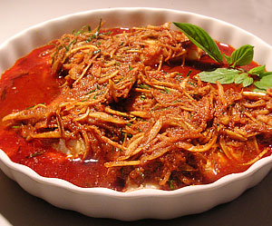

Redsnapper an Krachai
5,5 von 6100 g rote Currypaste in reichlich Öl anbraten, die in feine Streifen geschnittenen Fingerwurzeln (krachai) dazugeben mit etwas Wasser und Fischsauce (Nam Pla) ablöschen. 5 El Zucker beigeben und etwas köcheln lassen. Limettenblätter in feine Streifen schneiden und den Stiel entfernen, beigeben. Über den in Öl angebratenen Redsnapper geben, sofort servieren.
